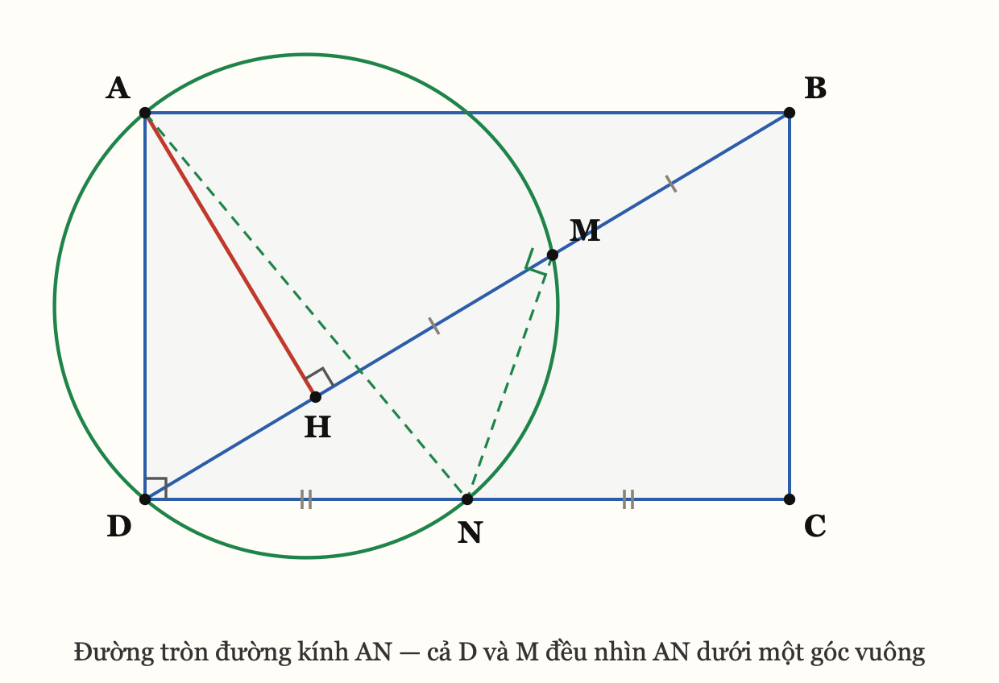
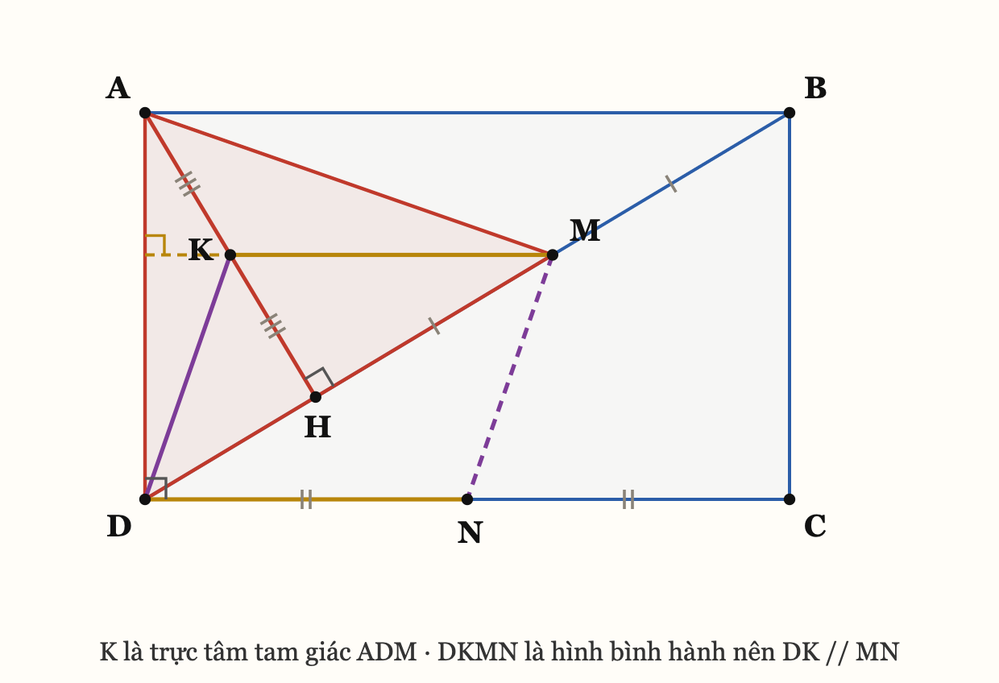
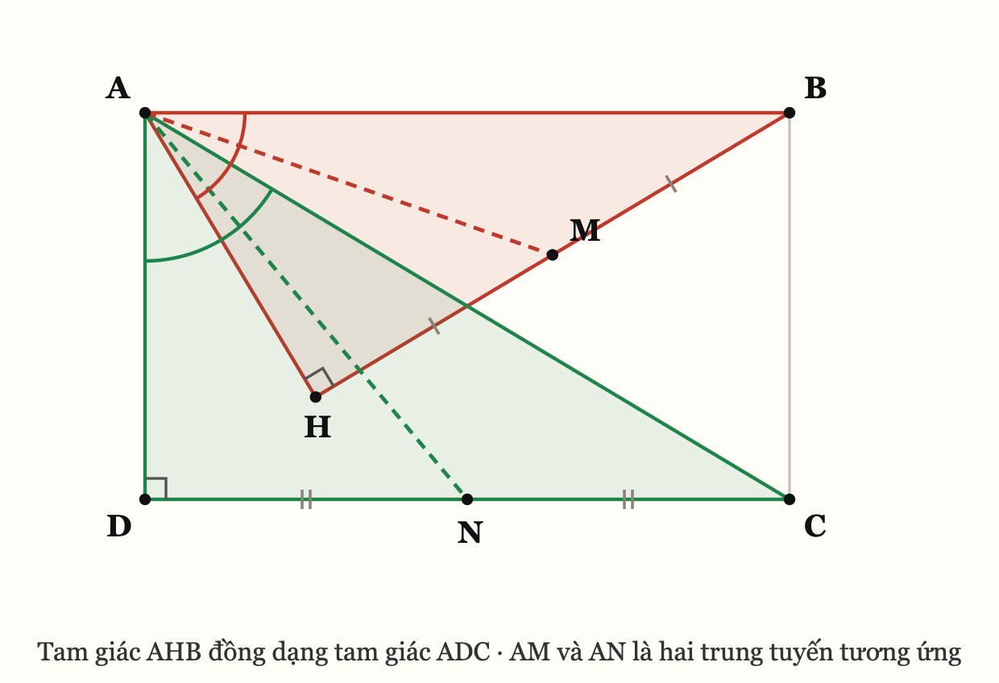
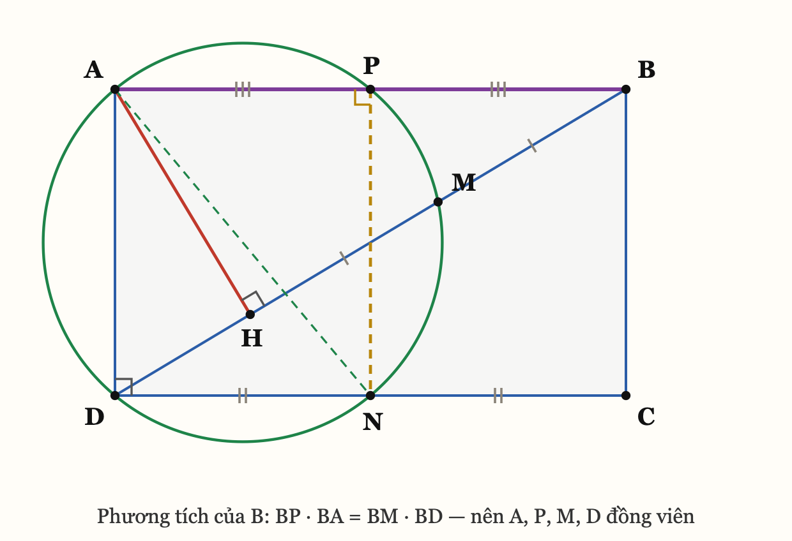

Cho hình chữ nhật
ABCD. QuaAkẻ đường thẳng vuông góc vớiBDtạiH. GọiMlà trung điểm củaHB. Chứng minh rằng đường tròn ngoại tiếp tam giácAMDđi qua trung điểm củaCD.
Đặt thêm: N là trung điểm của
CD. Bài trở thành: chứng minh A,
M, D, N đồng viên.

Hình này đã chứa sẵn câu trả lời: đường tròn đi qua
A, M, D, N nhận AN làm đường
kính.
Trong bốn điểm
A,M,D,Nthì đã có sẵn một góc vuông:∠ADN = ∠ADC = 90°. Một góc vuông nội tiếp thì cạnh đối diện nó bắt buộc là đường kính. Vậy đường tròn cần tìm chỉ có thể là đường tròn đường kínhAN— không còn lựa chọn nào khác. Và khi đóMnằm trên nó khi và chỉ khi∠AMN = 90°.
Bài từ "chứng minh 4 điểm đồng viên" rút về "chứng minh
AM ⊥ MN".
Vì sao nghĩ tới nó — đây mới là phần dùng lại được: bài bảo chứng minh đồng viên, mà trong nhóm điểm đó đã có một góc vuông cho không. Góc vuông là dữ kiện đắt nhất trong hình học đường tròn, vì nó khoá luôn vị trí của đường tròn. Đi đường cộng góc là dùng phí nó. Phản xạ: đếm góc vuông trước khi chọn dấu hiệu nội tiếp.

Gọi N là trung điểm CD,
K là trung điểm AH.
(1) KM là đường trung bình của tam giác
AHB. K, M lần lượt là
trung điểm của AH, HB, nên
KM ∥ AB và KM = AB/2.
(2) DKMN là hình bình hành.
N là trung điểm DC nên
DN = DC/2 = AB/2 và DN ∥ AB. Kết hợp với (1):
KM ∥ DN và KM = DN. Tứ giác DKMN
có một cặp cạnh đối song song và bằng nhau nên là hình bình hành, do
đó
DK ∥ MN. (*)(3) K là trực tâm của tam giác
ADM. Xét tam giác ADM:
KM ∥ AB mà AB ⊥ AD (giả thiết hình chữ
nhật) nên KM ⊥ AD ⟹ MK nằm trên đường cao kẻ
từ M.H và M cùng thuộc BD, mà
AH ⊥ BD, nên AH ⊥ DM; lại có
K ∈ AH ⟹ AK nằm trên đường cao kẻ từ
A.Hai đường cao cắt nhau tại K, vậy K là trực
tâm tam giác ADM, suy ra DK ⊥ AM.
(4) ∠AMN = 90°. Từ (*)
DK ∥ MN và DK ⊥ AM, suy ra
MN ⊥ AM, tức ∠AMN = 90°.
(5) Kết luận. ∠ADN = ∠ADC = 90° và
∠AMN = 90°, nên D và M
cùng nhìn đoạn AN dưới một góc vuông. Vậy
D, M cùng thuộc đường tròn đường kính
AN, tức bốn điểm A, M,
D, N cùng thuộc một đường tròn.
Đường tròn ngoại tiếp tam giác AMD chính là đường tròn
đường kính AN, và nó đi qua N — trung
điểm của CD. ∎
Đường cụt 1 — thử dấu hiệu "hai góc đối bù nhau" cho
AMND. Phải tính ∠AMD. Nhưng
∠AMD kề bù với ∠AMB, mà AM không
nối với đoạn nào có sẵn số đo — đề không cho một góc cụ thể
nào. Tắc. Bài học: đề không cho góc thì đừng mở đường bằng cộng
góc.
Đường cụt 2 — thử "hai đỉnh kề cùng nhìn một cạnh".
Cũng phải so ∠AMD với ∠AND. Tắc vì đúng lý do
trên.
Cái mở khoá — đếm góc vuông trong hình. Có sẵn ba
góc vuông: tại A, tại D, tại H.
Trong bốn điểm phải chứng minh thì ∠ADN đã là góc
vuông. Đó là lúc câu hỏi đổi từ "dùng dấu hiệu nội tiếp
nào?" sang "đường tròn đó là đường tròn
nào?" — và câu sau chỉ có một đáp án.
Vì sao dựng thêm K. Sau khi bài rút về
AM ⊥ MN, trong hình có hai trung điểm
M và N, nhưng chúng thuộc hai tam giác khác
nhau nên chưa ghép được. Muốn M có một đường trung bình thì
tam giác chứa nó phải có trung điểm cạnh thứ hai: M là
trung điểm HB của tam giác AHB, nên điểm còn
thiếu là trung điểm AH. Dựng
K xong thì KM ∥ AB, và vì AB ⊥ AD
nên KM tự nhiên trở thành một đường cao của tam
giác ADM — đó là chỗ trực tâm hiện ra.
Ba cách là cùng một sự thật nhìn từ ba phía. Mỗi phía mở ra một lớp bài khác nhau.

ABD vuông tại A, tam giác
DCA vuông tại D, có AB = DC,
AD = DA ⟹ ΔABD = ΔDCA (c.g.c) ⟹
∠ABD = ∠DCA.ΔAHB và ΔADC có
∠AHB = ∠ADC = 90° và ∠ABH = ∠ACD ⟹
ΔAHB ~ ΔADC (g.g).M, N là trung điểm HB,
DC — hai cạnh tương ứng — nên AM,
AN là hai trung tuyến tương ứng. Cụ thể
ΔAHM ~ ΔADN (c.g.c: ∠AHM = ∠ADN = 90°,
AH/AD = HM/DN), do đó ∠HAM = ∠DAN và
AM/AN = AH/AD.∠HAN vào hai vế của
∠HAM = ∠DAN, được ∠MAN = ∠HAD.ΔAMN và ΔAHD có ∠MAN = ∠HAD
và AM/AH = AN/AD ⟹
ΔAMN ~ ΔAHD (c.g.c) ⟹
∠AMN = ∠AHD = 90°. Kết luận như cách 1. ∎Cấu trúc đáng giá: đây là đồng dạng xoay (spiral similarity) ở dạng thuần khiết nhất. Từ
ΔAHM ~ ΔADN(cùng đỉnhA) suy ra ngayΔAHD ~ ΔAMN— tráo chỗ hai chữ ở giữa. Bước 4 là chỗ duy nhất phải cẩn thận cấu hình: tuỳ hình chữ nhật cao hay rộng mà tiaANnằm trong hay ngoài góc∠HAD, nên viết là "cộng hoặc bớt cùng góc∠HAN" chứ không viết "cộng".

Dựng thêm P là trung điểm
AB.
ABD vuông tại A, AH
là đường cao ⟹ hệ thức lượng: AB² = BH · BD.BP · BA = (AB/2) · AB = AB²/2 = (BH/2) · BD = BM · BD.P, A cùng nằm trên tia BA;
M, D cùng nằm trên tia BD. Theo
chiều đảo của phương tích, bốn điểm
A, P, M, D
đồng viên.P, N là trung điểm hai cạnh đối
AB, DC nên PN ∥ AD, mà
AD ⊥ AB, suy ra ∠APN = 90°. Cùng với
∠ADN = 90°, bốn điểm A,
P, N, D đồng viên (đường
tròn đường kính AN).A, P, D ⟹ trùng
nhau. Vậy M và N cùng nằm trên một
đường tròn với A và D. ∎Vì sao
Pphải xuất hiện — phần đáng giữ nhất của bài này: phương tích của một điểm cần hai cát tuyến qua điểm đó. Điểm tự nhiên ở đây làB: nó nằm ngoài đường tròn và đường thẳngB–M–Dđã là một cát tuyến cho sẵn. Cát tuyến thứ hai quaBchỉ còn một khả năng — đường thẳngBA, vìAlà điểm duy nhất còn lại đã biết nằm trên đường tròn. Câu hỏi thu về: "BAcắt đường tròn lần thứ hai ở đâu?" Và hệ thứcAB² = BH · BDtrả lời ngay: ở trung điểmAB.Đó là cách tìm ra điểm phụ mà không phải đoán. Điểm phụ không rơi từ trên trời — nó là nghiệm của một phương trình phương tích.
Gộp cả ba cách lại, sự thật đầy đủ là:
Năm điểm
A,P,M,N,Dcùng nằm trên đường tròn đường kínhAN, trong đóP,Nlần lượt là trung điểm hai cạnh đốiABvàDC.
Đề chỉ hỏi bốn điểm trong năm.
Viết thành thứ nhìn thấy được trên hình, không phải tên chương:
| Thấy gì trên hình | Nghĩ ngay tới |
|---|---|
| Bảo chứng minh 4 điểm đồng viên mà trong 4 điểm đó đã có sẵn một góc vuông | Đường tròn bắt buộc là đường tròn đường kính của cạnh đối diện góc vuông đó. Bài rút về chứng minh một góc vuông thứ hai |
| Tam giác vuông có đường cao hạ từ đỉnh góc vuông | AB² = BH·BD — phương tích đang nằm sẵn trong
hình, chỉ chờ được gọi tên |
| Hai trung điểm của hai đoạn thẳng | Đường trung bình. Nếu hai trung điểm ở hai tam giác khác nhau thì dựng thêm trung điểm thứ ba để ghép |
| Một đường trung bình vuông góc với một cạnh của tam giác đang xét | Trực tâm — đường trung bình đó là một đường cao trá hình |
| Hai tam giác đồng dạng, đề lấy trung điểm hai cạnh tương ứng | Đồng dạng xoay: ΔAXY ~ ΔAZT ⟹
ΔAXZ ~ ΔAYT. Tráo hai chữ ở giữa |
| Một điểm nằm ngoài đường tròn và đã có một cát tuyến qua nó | Tìm cát tuyến thứ hai — thường là đường nối điểm đó với một đỉnh đã biết, và giao điểm thứ hai chính là điểm phụ cần dựng |
Không giảng lại lý thuyết. Mỗi chỗ hổng có một bài mẫu giải sẵn và một bài tự làm.
Bài mẫu A. Cho tam giác ABC có hai
đường cao BE và CF (E ∈ AC,
F ∈ AB). Chứng minh B, C,
E, F cùng thuộc một đường tròn và chỉ ra tâm
của nó.
Giải.
BE ⊥ ACnên∠BEC = 90°.CF ⊥ ABnên∠BFC = 90°. VậyEvàFcùng nhìn đoạnBCdưới một góc vuông, nênE,Fcùng thuộc đường tròn đường kínhBC. Bốn điểmB,C,E,Fđồng viên; tâm là trung điểm củaBC. ∎Đây đúng là bước (5) của bài 10.1, chỉ khác cái tên.
Bài A′ — tự làm. Cho tam giác ABC, hai
đường cao AD và BE cắt nhau tại
H. Chứng minh tứ giác CDHE nội tiếp, và
chỉ rõ đường kính của đường tròn đó.
Bài mẫu B. Cho tam giác ABC vuông tại
A, đường cao AH (H ∈ BC). Gọi
M là trung điểm HB, P là trung
điểm AB. Chứng minh BM · BC = BP · BA.
Giải. Tam giác
ABCvuông tạiA,AHlà đường cao ⟹AB² = BH · BC. Do đóBM · BC = (BH/2) · BC = AB²/2 = AB · (AB/2) = BA · BP. ∎
Bài B′ — tự làm. Vẫn giả thiết bài mẫu B: chứng minh
bốn điểm A, P, M, C
cùng thuộc một đường tròn.
Làm xong A′ và B′ là đã tự dựng lại được cách 3 của bài 10.1, chỉ còn thiếu đúng một bước ghép hai đường tròn. Đó là chủ ý của cặp bài này.
A′. AD ⊥ BC nên
∠HDC = 90°; BE ⊥ AC nên
∠HEC = 90°. Hai điểm D, E cùng
nhìn đoạn HC dưới góc vuông ⟹ D,
E thuộc đường tròn đường kính HC. Vậy
CDHE nội tiếp đường tròn đường kính
HC. (Cách khác:
∠HDC + ∠HEC = 180° — hai góc đối bù nhau. Cùng một sự
thật.)
B′. Theo bài mẫu B: BP · BA = BM · BC.
Mà P, A cùng nằm trên tia BA và
M, C cùng nằm trên tia BC. Theo
chiều đảo của phương tích, bốn điểm A, P,
M, C đồng viên. ∎
Mọi khẳng định trong bài đã được kiểm chứng bằng số trên 5000 hình chữ nhật ngẫu nhiên — 0 phản ví dụ. Hình vẽ sinh bằng SVG rồi render ra PNG.